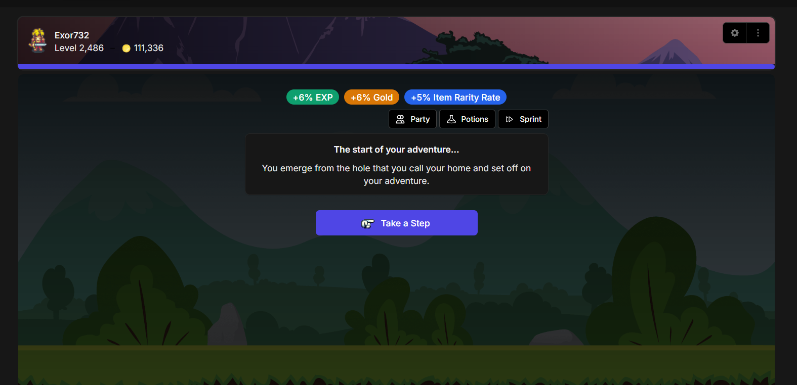

Dalam pengembangan proyek Autostepper, salah satu kendala terbesar adalah memastikan tingkat akurasi pemindaian layar (screen parsing). Bot berbasis computer vision harus murni mengandalkan template matching dan analisis piksel — berbeda dengan injeksi memori atau intersepsi paket jaringan.
1. Anomali Subpixel Anti-Aliasing (ClearType)
Bot gagal mengenali tombol antarmuka yang tampak identik secara kasat mata. Setelah
membedah piksel tangkapan layar, saya menemukan bahwa teks "putih" sebenarnya tidak murni
putih. Sistem operasi menggunakan Subpixel Anti-Aliasing untuk memperhalus ujung teks,
menghasilkan pinggiran seperti (232, 200, 162) (persik) atau
(178, 210, 238) (biru muda).
Solusinya elegan: menyuntikkan parameter grayscale=True ke modul penglihatan
bot. Ini melucuti semua data warna dan memaksa bot hanya mengevaluasi bentuk hitam-putih,
menetralisir efek anti-aliasing sepenuhnya.
2. Inkonsistensi UI dan CSS :hover State
Pengembang web sering menggunakan pseudo-class :hover pada CSS. Saat kursor
berada di atas tombol, warnanya berubah terang — namun karena bot memindahkan kursor
menjauh saat jeda, ia selalu melihat tombol dalam resting state yang gelap.
Akibatnya, bot keliru mengklik elemen yang sudah habis karena warnanya serupa.
3. Rekayasa "Luminosity Scanner"
Daripada mencari kode RGB tertentu, saya merancang Luminosity Scanner yang memindai garis horizontal melintasi tengah tombol untuk mencari piksel dengan kecerahan tertinggi. Dengan ambang batas 160, bot kini dapat mengabaikan tombol mati dan mengekstraksi sumber daya dengan akurasi 100%.
4. Manajemen State dan "Dead Reckoning"
Memindai UI terus-menerus sangat tidak efisien. Karena setiap poin energi membutuhkan 5 menit untuk beregenerasi, saya mengimplementasikan Dead Reckoning: ketika energi habis, bot menyetel kronometer internal 80 menit, lalu secara otonom beralih ke mode arena tepat saat waktu habis.
Kesimpulan
Membangun bot bukan sekadar merekam klik mouse. Ini tentang membangun State Machine
yang tangguh. Dengan arsitektur Object-Oriented yang mendefinisikan
BotState dan kelas Config sentral, proyek ini berevolusi
dari skrip sederhana menjadi entitas automasi yang sepenuhnya mandiri.